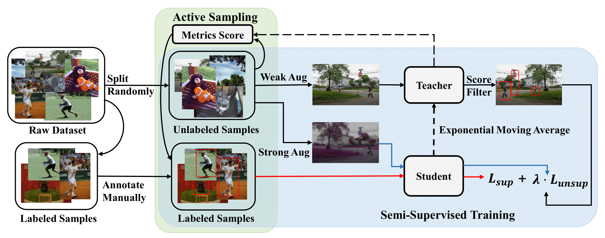

Jianghang Lin 林将航Media Analytics and Computing (MAC) Lab, Xiamen University, Xiamen, China. Emails: hunterjlin007 AT gmail.com (best), hunterjlin007 AT stu.xmu.edu.cn [Goolge Scholar] [GitHub] [Curriculum Vitae] (Last updated on March 2023) |

|
[Biography] [Publications] [Honors and Awards]
Biography
I am currently a third-year Master student at Xiamen University, advised by Prof. Rongrong Ji. My research interests are in Computer Vision, Multimodal and Machine Learning. Recently, I focus on: Weakly-Supervised, Semi-Supervised and Open Vocabulary Object Detection.
- 09/2020 -- Now: M.S. in Pattern Recognition and Intelligent System, Xiamen University, Xiamen, China
- 12/2022 -- 05/2023: Research Intern, CATL, Ningde, China
- 02/2022 -- 08/2022: Research Intern under the supervision of Dr. Yunhang Shen, Tencent Youtu Lab, Shanghai, China
- 07/2020 -- 08/2020: Development Intern, Ruijie Networks, Fuzhou, China
- 09/2016 -- 07/2020: B.S. in Software Engineering, Fuzhou University, Fuzhou, China
Publications
Conference
|  | Peng Mi*, Jianghang Lin*, Yiyi Zhou*, Yunhang Shen, Gen Luo, Xiaoshuai Sun, Liujuan Cao✉, Rongrong Fu, Qiang Xu, Rongrong Ji
Active Teacher for Semi-Supervised Object Detection IEEE/CVF Conference on Computer Vision and Pattern Recognition (CVPR), 2022 [pdf] [code] (*Equal Contribution) |
Honors and Awards
- Second Prize of The 6th "China Software Cup" Software Design Competition for College Students, 2017
- Second Prize of The 8th National College Students' service outsourcing entrepreneurship and innovation competition (P.R.China), 2017